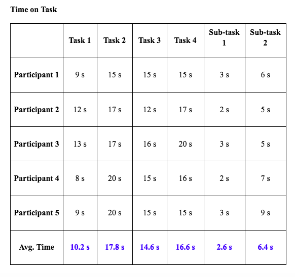
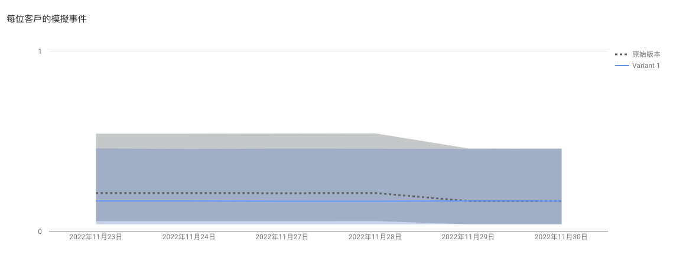

Assignment 5
The name of the website is further revised from Board game World (in Figma prototype) to BoardGANG. The meaning of the name is to gather board game players together and enjoy the fun of board game by browsing the website.
BoardGANG is a board game hub for Hong Kong board game players (like a Board Game version of Open Rice). Also, to promote some small board game shops as the details of the shops that sell board games are fragmented currently. The website will include the following functions to make this website sustainable in the long run:
Revised Usability test
The revised usability test is conducted to understand if the website can serve the purposes of the above functions and to understand their behavior when navigating the site and to perform a few tasks in the high-fidelity prototype. The goal is to identify the problems in the design of the website and improve according to the comments received from the first usability test.
Tasks:
- You want to know the detail of a particular board game.
- You want to sell your unwanted board games. Find a way to do that.
- You want to join a board game tournament organized by the local board game store. Find the one you want to join.
- You want to share your comments/tactics with others on one board game you’ve played. Find a way to do that.
Sub-tasks:
- Find register and login section
- Find Contact Us section
Participants
All Participants invited have board game experience of more than 5 years or above. They will spend around $500-$1,000 to purchase new board games each month. They all have experience in visiting board game cafés and board game shops in Hong Kong, Participant 3 is also a board game shop owner on Instagram, she sells board games via Instagram and carousels. Moreover, all 5 participants attended the first usability test by using Figma.
The average time of performing the tasks is revised from 15.9 s (Main tasks) to 14.8 s and 3.9 s (Sub-tasks) to 4.5 s. The overall speed for performing min tasks is faster than the Figma prototype. Although the participants gained some concept about the website through the first test, the participants reflected that the overall design of the website is easy to navigate. All the participants successfully completed the tasks assigned and the flow of the website was logical.
A/B Testing
After building my website, A/B Testing is conducted by using Google Optimize to identify a better version of the webpage to perform a certain task. I use the ‘桌遊大師錦標賽’ page to conduct the A/B/ test and see which version of the webpage can easily direct the people to click the join competition button.
The difference between both tested versions is the location of the join button. Version 1 placed the join button under each competition, all the buttons direct to the same sign-up form, while Version 2 placed the join button of all competitions above the event calendar.
Overall speaking, the performance of Version 1 is better than version 2 according to the data collected above. It is proved that Version 1 can easier direct the user to locate the join button and click the button and proceed to the next page. Therefore, I choose Version 1 as my final choice.